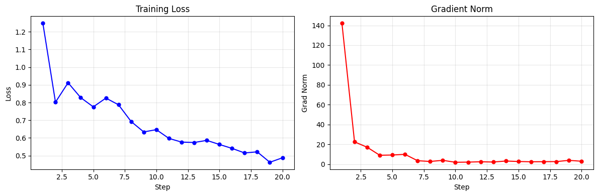

SFT 指令微调
torchtitan-npu 支持基于对话数据的指令微调（Supervised Fine-Tuning, SFT）。当前已提供 Qwen3-30B-A3B 模型在 NPU 上的开箱即用 SFT 配置，支持 Ulysses Context Parallel 长序列训练。
快速开始：Qwen3-30B-A3B SFT
前置条件
- 准备 Qwen3-30B-A3B 的 HuggingFace 预训练权重（如
./assets/hf/Qwen3-30B-A3B） - 准备训练数据集（详见数据预处理）
一键启动
MODULE=torchtitan_npu.models.qwen3 CONFIG=sft_qwen3_30ba3b_math bash scripts/run_train.sh
数据预处理
SFT 的数据预处理在 torchtitan_npu/models/qwen3/config_registry.py 的配置函数中完成。以 sft_qwen3_30ba3b_math 为例，它使用 GSM8K 数据集，process_sample 将原始样本转为 [user, assistant] 消息列表：
def sft_qwen3_30ba3b_math() -> Trainer.Config:
def process_sample(sample):
answer = sample["answer"]
reasoning, final_answer = answer.rsplit("####", 1)
return [
{"role": "user", "content": sample["question"]},
{
"role": "assistant",
"reasoning_content": reasoning.strip(),
"content": final_answer.strip(),
},
]
# ... 其余配置 ...
dataloader=ChatDataLoader.Config(
dataset_path="openai/gsm8k",
load_dataset_kwargs={"name": "main", "split": "train"},
sample_processor=process_sample,
)
框架拿到 process_sample 返回的消息列表后，自动完成以下处理：
- 调用 tokenizer 的 chat template 将消息渲染为完整文本
- 通过增量前缀重 tokenize 定位 prompt/response 边界，对 prompt 部分做 label mask（仅对 assistant 回复计算 loss）
- 对多个样本做 greedy packing（将短样本打包到同一 seq_len 窗口，EOS 分隔，per-document position 重置）
- 超过 seq_len 的样本自动丢弃（而非截断）
消息格式
process_sample 需返回如下格式的消息列表：
[
{"role": "user", "content": "用户输入"},
{"role": "assistant", "content": "助手回复"},
]
Qwen3 支持 thinking mode，可在 assistant 消息中添加 reasoning_content 字段：
[
{"role": "user", "content": "用户输入"},
{"role": "assistant", "reasoning_content": "思考过程", "content": "最终回答"},
]
限制：当前仅支持单轮对话（一条 user + 一条 assistant），暂不支持多轮。
Ulysses Context Parallel
torchtitan-npu 为 Qwen3 提供了 Ulysses 风格的 CP 实现。在配置中设置 context_parallel_degree > 1 即可启用：
bash scripts/run_train.sh --parallelism.context_parallel_degree 4
关于 Ulysses CP 的实现原理和约束条件，详见自定义 Context Parallel 特性文档。
权重加载与保存
加载预训练权重
SFT 配置默认从 HuggingFace 格式加载预训练权重：
--checkpoint.initial_load_in_hf \
--checkpoint.initial_load_path /path/to/Qwen3-30B-A3B
注意：
checkpoint.folder不能与checkpoint.initial_load_path相同，否则框架会跳过 HuggingFace 权重加载。
切换为自己的预训练权重
修改 checkpoint.initial_load_path 和 hf_assets_path 指向新的权重目录：
--checkpoint.initial_load_path /path/to/your/model \
--hf_assets_path /path/to/your/model
保存训练后的权重
训练完成后，权重会自动保存到 checkpoint.folder 指定的路径。可通过 checkpoint.interval 设置保存间隔：
--checkpoint.folder /path/to/save \
--checkpoint.interval 100
如仅需加载权重而不保存（如调试时），设置 --checkpoint.load_only。
常见问题
Q: 数据集跑完一轮就停了？
默认 dataloader.infinite=true，数据集会无限循环。如果设为 false，数据遍历完一轮后训练会停止。tyro 的 bool 参数通过 flag 设置，显式开启或关闭可使用：
--dataloader.infinite
--dataloader.no-infinite
Q: 超长样本被丢弃了？
ChatDataset 会自动丢弃 token 数超过 seq_len 的样本（而非截断），日志中会打印 Dropping sample 提示。可增大 seq_len 或开启 Ulysses CP 来容纳更长样本。
附录 A：Wordle SFT 样例
基于 torchtitan_npu，在 Ascend NPU 上对 Qwen3-1.7B 进行 Wordle 猜词游戏的 SFT 微调。参考 prime-rl 的 Wordle 示例。
环境准备
安装评测工具：
pip install prime # verifiers 框架（含 vf-eval CLI）
git clone https://github.com/PrimeIntellect-ai/prime-rl.git
cd prime-rl
sed -i 's|git@github.com:|https://github.com/|g' .gitmodules
git submodule sync
git submodule update --init deps/verifiers
pip install deps/verifiers/environments/wordle # wordle 游戏环境
模型与数据
| 资源 | 链接 | 说明 |
|---|---|---|
| Qwen3-1.7B (instruct) | HF | 含 chat template 的 instruct 版本，~3.8GB |
| willcb/V3-wordle | HF | Wordle 游戏多轮对话轨迹 |
下载模型权重
# modelscope
pip install modelscope
python3 -c "
from modelscope import snapshot_download
snapshot_download('Qwen/Qwen3-1.7B', local_dir='./assets/hf/Qwen3-1.7B')
"
# HuggingFace
pip install huggingface_hub
HF_ENDPOINT=https://hf-mirror.com huggingface-cli download Qwen/Qwen3-1.7B --local-dir ./assets/hf/Qwen3-1.7B
数据集
每个样本包含 prompt 和 completion 两个字段。训练时通过 HF 在线加载，首次下载后自动缓存。
若网络不通，可在有网的机器上下载原始文件，拷贝到训练环境后转为 parquet：
# 1. 在有网的机器上下载
hf download willcb/V3-wordle --repo-type=dataset --local-dir ./assets/data/wordle_raw
# 2. 拷贝到训练机器，转为 parquet
python3 -c "
from datasets import load_dataset
ds = load_dataset('./assets/data/wordle_raw', split='train')
ds.to_parquet('./assets/data/wordle/train.parquet')
"
查看数据集格式（从本地读取）：
python3 -c "
from datasets import load_dataset
import pprint
ds = load_dataset('./assets/data/wordle', split='train')
pprint.pprint(next(iter(ds)), width=100, depth=3)
"
torchtitan_npu.models.qwen3.config_registry 的 _process_wordle_sample 函数将 prompt 和 completion 拼接为完整的 [system, user, assistant, user, assistant, ...] 消息列表。
模型选择
使用 Qwen/Qwen3-1.7B（instruct 版本，已内置多轮对话模板）。
可用的 SFT 配置
| 配置名 | 说明 |
|---|---|
sft_qwen3_1_7b_wordle |
20 步 Wordle SFT 训练 |
多轮对话支持
上游 torchtitan 的 ChatDataset（源码）硬编码了 len(messages) != 2（仅接受 [user, assistant] 单轮格式）。Wordle 的 willcb/V3-wordle 数据集每条样本包含 6-10 条消息（多轮游戏轨迹），直接报错。
同时，还需要对对话的 assistant 部分进行 mask，效果等价于 prime-rl 的 role_to_mask: msg["role"] != "assistant"——仅对 assistant 消息计算 loss，user（环境反馈）不参与训练。
本 recipe 通过 torchtitan_npu/patches/torchtitan/multiturn_chat.py 解决以上问题（torchtitan_npu/__init__.py 自动加载，无需手动配置）。
运行训练任务
在线环境：
export HF_ENDPOINT=https://hf-mirror.com # 国内需要镜像
NGPU=1 MODULE=torchtitan_npu.models.qwen3 \
CONFIG=sft_qwen3_1_7b_wordle \
bash scripts/run_train.sh --checkpoint.last_save_in_hf
离线环境（已将数据集下载到本地）：
NGPU=1 MODULE=torchtitan_npu.models.qwen3 \
CONFIG=sft_qwen3_1_7b_wordle \
bash scripts/run_train.sh --checkpoint.last_save_in_hf \
--dataloader.dataset_path ./assets/data/wordle
--checkpoint.last_save_in_hf在最后一步自动导出 HF 格式。
训练结果参考

详细日志
step 1: loss 1.25 grad_norm 142.2
step 5: loss 0.57 grad_norm 4.0
step 10: loss 0.53 grad_norm 3.7
step 15: loss 0.50 grad_norm 2.9
step 20: loss 0.49 grad_norm 3.0
local_batch_size=2, global_batch_size=64 (gradient accumulation ×32)
吞吐: 5,619 tokens/s, MFU 16.5%, 显存 33.5GB (55%)
训练完成后，将 tokenizer 文件复制到 checkpoint 目录，推理时直接加载：
cp assets/hf/Qwen3-1.7B/{config.json,tokenizer.json,tokenizer_config.json,vocab.json,merges.txt} \
outputs/checkpoint_wordle_sft/step-20/
vf-eval 评测环境
vf-eval 是 prime-rl 提供的命令行评测工具，加载 Wordle 环境，向推理服务器发送多轮对话请求，模拟完整游戏过程并计算 reward。参考: prime-rl Wordle 示例
Wordle 环境依赖 nltk 语料库，首次使用需下载：
python3 -c "
import nltk
nltk.download('words')
nltk.download('averaged_perceptron_tagger')
"
启动推理服务器
scripts/infer_server.py 是一个极简的 OpenAI 兼容推理服务器，用 transformers + torch_npu 直接加载 SFT 权重，监听 8000 端口。
它做了什么：
- 加载 tokenizer + 模型（bf16，
.to("npu:0")） - 收到
POST /v1/chat/completions请求时： - 提取
messages（[{role, content}, ...]） - 调用
tokenizer.apply_chat_template(messages)将消息列表转为 Qwen3 格式的 prompt 字符串 - 例如
[{"role":"user","content":"Guess a word"}]转为：<|im_start|>user\nGuess a word<|im_end|><|im_start|>assistant\n - tokenize → NPU 推理 → decode → 返回
{"choices": [{"message": {"content": "..."}}]}
启动服务器：
# 安装 transformers 依赖
pip install transformers
python3 scripts/infer_server.py \
--model ./outputs/checkpoint_wordle_sft/step-20 \
--port 8000 &
# 验证
curl http://localhost:8000/health
# → {"status": "ok"}
运行 vf-eval
vf-eval 是 prime-rl 的命令行评测工具。它加载 Wordle 游戏环境（deps/verifiers/environments/wordle/），向推理服务器发送多轮对话请求，自动计算 reward。
工作流程：
- 从 20 个预留评估词中选一个秘密词（不在训练集中）
- 发送系统提示 + 游戏规则 → 推理服务器
- 模型返回
<think>...</think><guess>[word]</guess> - 环境解析
<guess>中的词，计算 G/Y/X 反馈 - 反馈发回模型 → 重复步骤 3-5（最多 6 轮）
- 游戏结束，计算 reward（correct + format + partial + length）
vf-eval wordle \
--provider openai \
--model instruct-sft \
--api-base-url http://localhost:8000/v1 \
--num-examples 20 \
--rollouts-per-example 3 \
--max-concurrent 1 \
--max-tokens 1024 \
--temperature 0.6
| 参数 | 说明 |
|---|---|
--provider openai |
使用 OpenAI 兼容 API（/v1/chat/completions） |
--api-base-url |
推理服务器地址 |
--num-examples 20 |
评测 20 局（每局不同秘密词） |
--rollouts-per-example 3 |
每局重复 3 次，取平均 |
--max-concurrent 1 |
串行请求（单线程服务器避免过载） |
--max-tokens 1024 |
每轮最多生成 1024 tokens |
--temperature 0.6 |
采样温度（>0 产生多样性） |
评测指标说明
Wordle 环境每局最多 6 轮猜测，每轮模型输出 <guess>[word]</guess>，环境返回 G/Y/X 反馈。Reward 由 verifiers 子模块中的 wordle.py 定义：
| 指标 | 实现 | 计算方式 | 满分含义 |
|---|---|---|---|
correct_answer |
L23-27 |
guess == "[" + answer + "]" |
猜对秘密词 = 1.0 |
partial_answer |
L39-53 |
0.2 * num_greens + 0.1 * num_yellows |
部分字母正确 |
length_bonus |
L29-37 |
correct / num_guesses |
更少步数猜中奖励更高 |
format_reward |
parser.get_format_reward_func() |
XML 解析器校验 <guess>...</guess> |
格式合规 = 1.0 |
评测结果对比
基础模型（Qwen3-1.7B）
| 指标 | 值 | 解读 |
|---|---|---|
| format_reward | 0.200 | 未经过 SFT，几乎无法遵循 <guess>...</guess> 格式 |
| avg reward | 0.04 | 仅来自极少量 format，没有有效的猜词行为 |
| correct_answer | 0% | 基础模型不会玩 Wordle |
| partial_answer | 0% | 无有效字母匹配 |
| num_turns | 2.0 | 2 轮后即放弃（生成质量差，被环境判定无效） |
| 每轮生成时间 | 25-58s | 输出冗长的 rambling text，推理极慢 |
SFT 微调后
| 指标 | 值 | 解读 |
|---|---|---|
| format_reward | 1.000 | 模型 100% 遵循 <guess>[word]</guess> 格式 — SFT 目标达成 |
| avg reward | 0.40 | 主要来自 format (1.0×0.2) + partial (字母部分正确) |
| correct_answer | 0% | 20 步 SFT 不足以学会策略性猜词 — 需要 RL 阶段 |
| partial_answer | 0.20 | ~1 个字母 G/Y 正确，模型在试探但未收敛到正确策略 |
| num_turns | 7.0 | 完整玩满 7 轮，稳定多轮对话 |
| 每轮生成时间 | ~2s | 输出简洁，推理效率高 |
总结：仅 20 步 SFT（gradient accumulation ×32, effective batch_size=64）即让 Qwen3-1.7B 从完全不会玩 Wordle 变为 100% 遵循游戏格式、稳定完成多轮对话。策略性猜词能力（correct_answer）仍需 RL 阶段训练。
Pass@k 说明
vf-eval 通过 --rollouts-per-example 控制每个评估词的独立尝试次数：
| 指标 | 含义 | 本 recipe 配置 |
|---|---|---|
pass@1 |
单次尝试正确率 — 反映模型的直接能力 | 报告 3 次 rollouts 的均值与标准差 |
pass@k |
k 次独立尝试中至少一次正确的概率 — k 越大越能容忍随机性 | --rollouts-per-example 3 |
pass^k |
k 次尝试全部正确的概率 — 衡量一致性和稳定性 | 与 pass@k 对比，判断采样是否稳定 |
| 场景 | 解读 |
|---|---|
| pass@3 ≫ pass@1 | 模型有潜力但采样不稳定，多次尝试能发现正确答案 |
| pass^k ≈ pass@k | 模型输出一致性高，每次尝试结果相近 |
| format_reward = 1.0 | SFT 目标达成 — 模型 100% 遵循 Wordle 对话格式 |
| correct_answer = 0% | 策略性猜词需要 RL 阶段训练 |